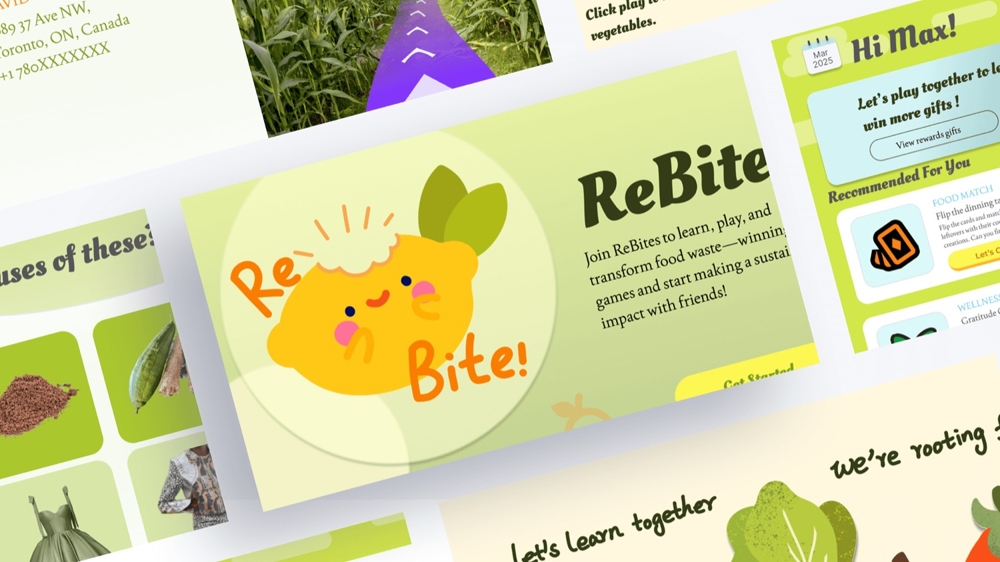

MaaTRx — Drug Shortage Dashboard
Redesigning a dense drug-shortage tool so pharmacy teams can read risk and act at a glance.

Redesigning a dense drug-shortage tool so pharmacy teams can read risk and act at a glance.
MaaTRx is a Canadian health-technology company whose web platform helps healthcare practitioners anticipate and manage drug shortages. I worked on it end-to-end as a UX researcher and designer.
The project was a capstone in the University of Toronto’s Master of Information program, run in partnership with a real stakeholder. Together we redesigned 18 screens and addressed 10 UX problems surfaced through research and testing.
This project was a capstone in the University of Toronto’s Master of Information program. Rather than a hypothetical brief, we partnered with a real stakeholder to solve UX problems inside their live product.
MaaTRx is a Canadian health-technology organization founded in 2025. Its product is a web-based platform offering a suite of services that help healthcare practitioners anticipate and manage drug shortages. It’s a for-profit company operating on a subscription-based model.
[Draft] The dashboard is the screen practitioners return to every day, and it had grown dense and hard to scan. Users needed to answer one question fast: which shortages affect me, right now?
[Draft] I ran [X] interviews and a short moderated usability test to understand how people scan the dashboard and where they hesitated.
[Draft] I restructured the dashboard around a scan-first hierarchy: status at the top, filters that match how people think, and detail on demand. I sketched and tested a few layouts before refining one.
Across 8 usability sessions, we validated the redesign and closed out the 10 UX problems identified in research. [Add any final results or a quote.]
[Optional] A short quote from a user or stakeholder to make the outcome feel real.
 03
03Turned 10-question primary research into a low-pressure social product concept in 24 hours.
View case study →
02A dual student / teacher platform for everyday food choices — 1st place, Seneca Hackathon 2025.
View case study →